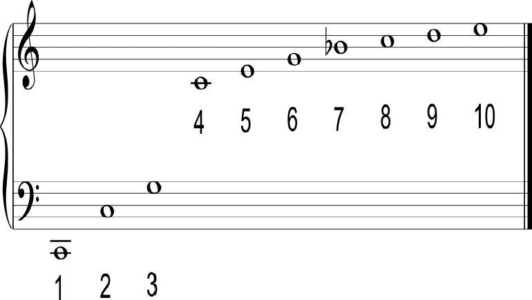

Observe a figura, contendo a serie
harmônica:

Considerando-se os números anotados sob
os sons da série harmônica, pode-se afirmar
que
-
os sons de numero 1, 3 e 5 formam um
acorde menor.
-
os sons de número 4, 5, 6 e 7 formam um
acorde menor.
-
os sons de número 5, 6 e 7 formam um
acorde diminuto.
-
os sons de número 6, 7 e 9 formam um
acorde menor.
Com relação a essas afirmativas, é
CORRETO afirmar que
-
I e II são verdadeiras.
-
I e III são verdadeiras.
-
II e IV são verdadeiras.
-
II e III são verdadeiras.
-
II e IV são verdadeiras.